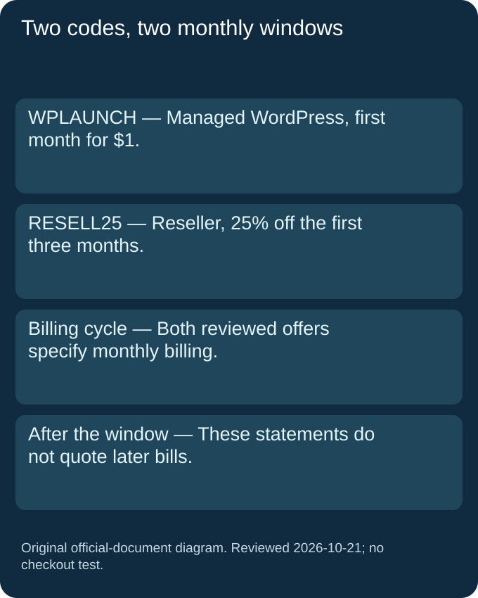
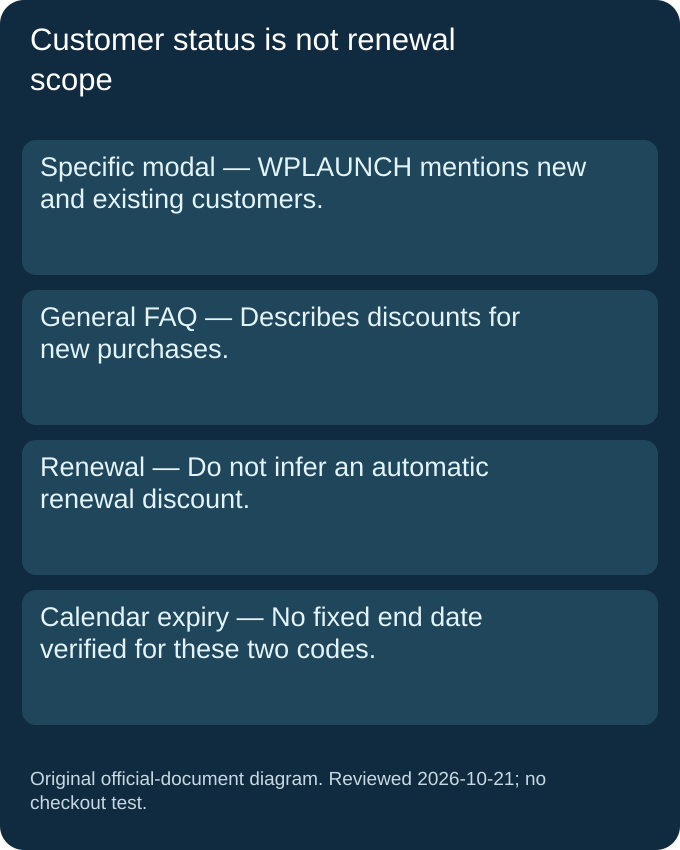

Which code belongs to which product?
WPLAUNCH is shown in the Managed WordPress dialog. RESELL25 is shown in the Reseller dialog. Keep each code with its own product and monthly billing condition.
Official coupons and deals · Reviewed 2026-10-21
ChemiCloud promo code
WPLAUNCH is officially shown for a $1 first month of Managed WordPress Hosting; RESELL25 is officially shown for 25% off the first three months of Reseller Hosting. Both reviewed offers specify monthly billing. Use the matching official offer; neither is presented here as a store-wide code or a verified renewal discount.
Official coupons and deals · Last checked and updated: 2026-10-21T09:15+08:00
| Offer | Product, cycle and duration | Official source | Reviewed |
|---|---|---|---|
| WPLAUNCH — first month for $1 | Any Managed WordPress Hosting plan, monthly billing. The reviewed modal names new and existing customers. No calendar expiry published for this code in the reviewed statement. | Official coupons and deals | 2026-10-21 |
| RESELL25 — 25% off the first three months | Reseller Hosting with monthly billing. The official modal labels the benefit recurring for three months. No calendar expiry published for this code in the reviewed statement. | Official coupons and deals | 2026-10-21 |
| Price or condition | Evidence boundary | Official source | Reviewed |
|---|---|---|---|
| Later invoices | The reviewed first-month and three-month offer statements do not quote the amount of later invoices. | Official coupons and deals | 2026-10-21 |
| Renewal scope | The general official FAQ describes discounts for new purchases and refers renewal questions to seasonal offers or support. Do not treat account status as a guarantee of renewal eligibility. | Official coupons and deals | 2026-10-21 |
| Annual billing | These two reviewed offer descriptions require monthly billing. They do not establish the discount for an annual billing record. | Official coupons and deals | 2026-10-21 |
| End date | Not published for these two code statements. An unpublished end date is not a promise that an offer is permanent. | Official coupons and deals | 2026-10-21 |
| Checkout status | The codes were read from official reveal dialogs; neither was redeemed or tested with a purchase. | Official coupons and deals | 2026-10-21 |
Each code was read from its own official reveal dialog. The general FAQ was expanded separately to check purchase and renewal wording. No fixed calendar expiry was verified for these code statements.


We turned the two offer descriptions into a small routing worksheet. Its inputs are the product, billing cycle, promotional month and purchase context. This is our own document-based audit: the cases are hypothetical and no order, payment or redemption was submitted. A positive result means that a record matches the selected published fields. It does not certify account eligibility or guarantee that a provider will accept a code.
For the Managed WordPress route, mark the first monthly period as month one. The reviewed offer supplies a first-month amount, so our worksheet attaches that amount only to that period. When the record moves to month two, it must stop repeating the introductory amount. The source statement alone does not supply the next invoice. We leave that later amount unknown rather than carrying the first-month figure into a fictional ongoing price.
The Reseller route has a different window. We mark months one, two and three as inside the described percentage period. Month four falls outside that stated window. That boundary is not an announcement of a particular later price or a claim about every promotion the company may issue. It is a limit on what this specific offer can establish. Keeping the month field beside the code prevents a three-month benefit from quietly becoming a permanent reduction.
A yearly billing record is not a monthly record with a different label. Both offer descriptions reviewed here explicitly select monthly billing. Our worksheet therefore returns “not established by this monthly offer” when the cycle is annual. It does not label an annual order invalid, and it does not calculate an annual saving from the monthly statement. Another annual benefit may exist, but it needs its own official evidence instead of being inferred from these two codes.
The Managed WordPress modal mentions existing customers as well as new customers, while the general FAQ talks about new purchases and directs renewal questions elsewhere. Those statements describe different fields. An existing account can be considering a new purchase; that is not the same record as renewing an existing subscription. We preserve the specific modal wording as a scope observation but refuse to turn it into a promise that every renewal receives the introductory benefit.
Our final record is a request for a calendar expiry. A changing countdown elsewhere on the page is not a fixed end date explicitly tied to these two code statements. The worksheet leaves that field “not published” and keeps the review date separate. This avoids making tomorrow’s reader rely on a date derived from a timer or copied from another product. Each boundary can be reproduced from the cited official offer description without buying a plan.
Read this worksheet as an evidence map. For an actual order, compare the exact product, cycle and purchase type with the current official offer before relying on a benefit.
Worksheet inputs: Official coupons and deals, including both code dialogs and the expanded renewal FAQ; reviewed 2026-10-21.
WPLAUNCH is shown in the Managed WordPress dialog. RESELL25 is shown in the Reseller dialog. Keep each code with its own product and monthly billing condition.
Official coupons and deals · Reviewed 2026-10-21
No. The reviewed statement specifies the first month. It does not quote the next invoice.
Official coupons and deals · Reviewed 2026-10-21
The reviewed offer specifies the first three months. This statement does not establish a reduction for month four.
Official coupons and deals · Reviewed 2026-10-21
No. The Managed WordPress modal mentions existing customers, but the general FAQ speaks about new purchases. This review does not promise a renewal benefit.
Official coupons and deals · Reviewed 2026-10-21
No. Both were transcribed from official dialogs. The worksheet contains synthetic document cases, not purchases or accepted redemptions.
Official coupons and deals · Reviewed 2026-10-21
Browse the brand-offer directory or return to the VPS and hosting home page.